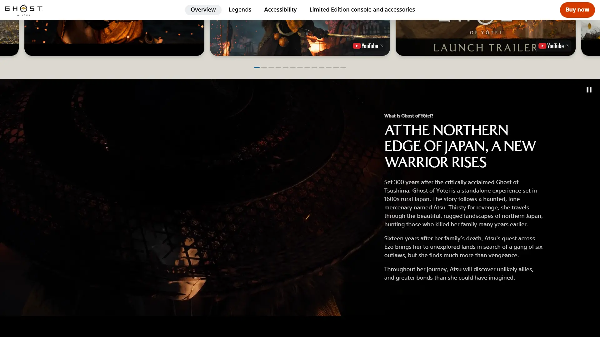
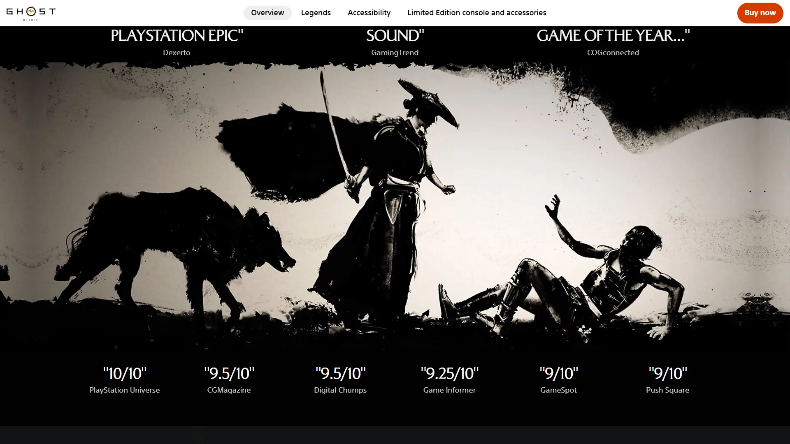

《对马岛之魂》精神续作，背景设定在 17 世纪日本北海道。


想象一片1603 年江户时代初期的蝦夷地——今天北海道所在的北方边境，以羊蹄山为地理中心。这里是和人尚未完全拓殖的「日本最后的边疆」，阿伊努民族仍在森林、河流与海岸边狩猎、捕鱼、祭祀熊神 Kamuy。Sucker Punch 把蝦夷地做成会呼吸的画——春天樱花飘落于温泉白雾、夏天向日葵田覆盖丘陵、秋天枫红浸透羊蹄山脊、冬天大雪封山只剩丹顶鹤步在结冰湖面。和人开拓村的木栅栏、阿伊努木雕图腾、火绳枪的硝烟反差缝合在同一帧四季绘卷里。
你是阿津——一位神秘女武士，身世成谜，怀抱一把特殊的刀北上来到蝦夷地。本作是《对马岛之魂》世界观的北方延伸——时代向后跨 329 年，从镰仓走到江户初期，从对马岛走到蝦夷地。阿津的旅途穿过和人开拓村、阿伊努聚落、羊蹄山温泉乡、海边渔村——她要追寻的人或物与她身上的伤一同潜伏在这片北方土地上。Sucker Punch 招牌的狐狸引路、雏菊诗篇、风指方向全部回归，但换成女性主角后增加了性别在江户初期父权武家社会里的反差张力。
那次你第一次站在羊蹄山下温泉雾中、和一名江户浪人四目对视后真剑出鞘的瞬间，Sucker Punch 把黑泽明式刀光做到了北方雪国新的冷峻——你打的不是 NPC，是整代日式公路片武侠的温度计；那场你在阿伊努村落坐在木火堆旁听老者讲熊神 Kamuy 故事的桥段——四季绘卷让你第一次明白「日本」不止京都奈良，还有北方那片说着完全不同语言的土地；那次你在火绳枪硝烟散去后凝视手中那把特殊刀的对话节点，阿津与自己达成了某种私人和解。这不是关于复仇的故事，是「我那把刀到底是为了谁而出鞘」的故事——羊蹄山雪线已经在转色，下一个季节去哪个村庄？
北海道四季绘卷 × 日式自然美学，是 Sucker Punch 把北海道真实四季地貌（春樱、夏向日葵田、秋枫红、冬丹顶鹤雪原）和日式自然美学传统（浮世绘构图、和歌雏菊、神社鸟居、温泉雾气）反差融合在江户初期边境武侠外壳里的混血美学。底色是《对马岛之魂》浮世绘四季的北方变奏；变异在于加入阿伊努文化图腾（木雕熊神、刺青纹样、神鼓节拍）+ 火绳枪硝烟。色彩锁定樱粉 + 枫红 + 鹤雪白三色组合，每季一个主色调。
「日式自然美学+边境武侠」视觉线跨越四百年。17 世纪江户初期狩野派金箔屏风奠定四季绘卷视觉语法。19 世纪葛饰北斋《富岳三十六景》定义浮世绘自然美学母版。1954 年黑泽明《七武士》定义武士片真剑对决电影语法——本作直接精神祖父。1962 年黑泽明《椿三十郎》定义独行剑客公路片范式。1989 年宫崎骏《魔女宅急便》定义日式公路片童话氛围。2013 年北海道金田一温泉乡纪录片让北方边境四季流转成为大众视觉。2020 年《对马岛之魂》正式开辟开放世界浮世绘武侠品类——本作直接母版。2025 年《羊蹄山之魂》在 PS5 + Decima 同代引擎下登场——女性主角+四季切换+阿伊努文化+火绳枪把日式自然美学开放世界推到工业级新巅峰。
基于体验清单 · 审美偏好 · IP故事三维度综合选出